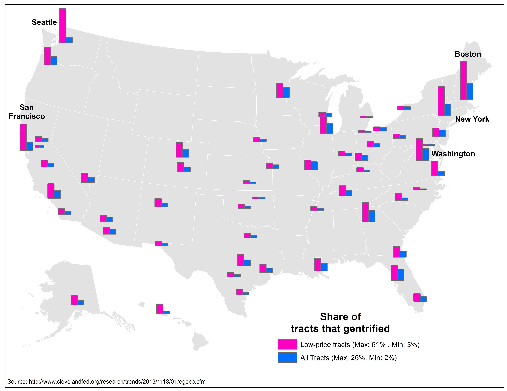
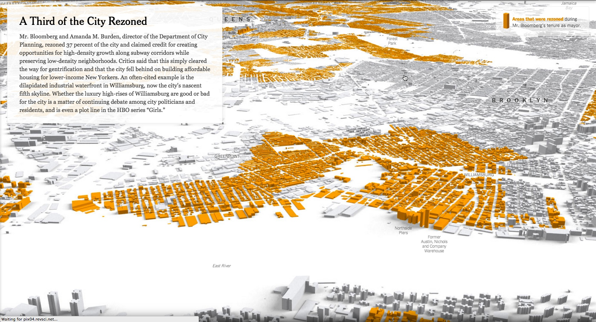
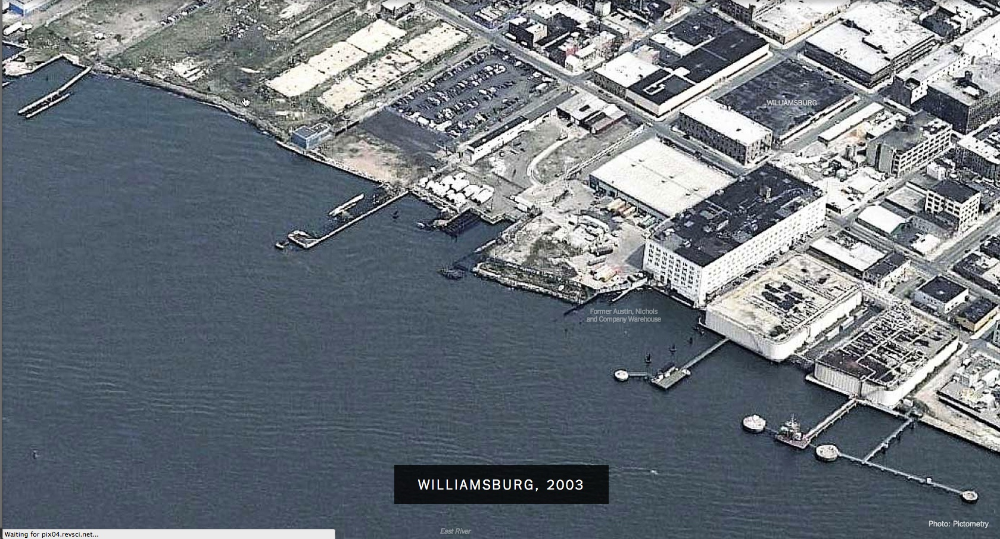

Narratives of Displacement in Bushwick, NY
Chris Henrick - Fall 2014
Participatory Research
& Social Inquiry
economic down turn + hyper-gentrification >>> increased displacement
Hyper-Gentrification?



Too often the conversation is on neighborhood change.
But what are the experiences of those being displaced?
The Participants
Themes
1.
Psychological, Emotional and Physical Trauma
"My mom didn’t do anything and she was trembling with fear, she was so traumatized, it gets to this point where you never want to confront this person again.”
“We didn’t eat for months, my child wasn’t eating, wasn’t gaining weight, he’s still under weight now from the trauma we went through then, he stopped growing, I lost an insane amount of weight.”
2.
Lack of Stable Housing
“Yeah, so basically like, I make $78,000 a year, my salary has gone up slightly since I began living here from 70 to 78 over time. But 70 as a single adult vs. 70 as a two person household is why I couldn’t afford to live there.”
“It costs us $5,000 just to move to that new apartment. That was all the money I had saved just in case if anything happened.”
3.
Landlord harrassment
“...and it was getting really bad there, they turned off the electric, they turned off the gas but to get it turned back on, they lied about some stuff..."
4.
Lack of accountability of landlords engaging in illegal practices
“Yeah like he purposefully didn’t fix things, sanitation mainly...he purposely failed the inspection.”
5.
Tenants’ unwillingness to fight back
“He gave me like $3,000. Under that negotiation I was also to drop the DHCR case. I felt like he bullied me into it.”
Personal Reflection
Difficulty in gaining access to individuals
Empathetic response to stories
Feelings of guilt
How can I do these stories justice?
Moving Forward
Informing my thesis research
Planning on pursuing research further
end.